1 前言
Kalma Filter应用十分广泛，比如导航中
为什么要使用Kalma Filter呢？
因为我们生活中的系统存在许多不确定性：
- 并不存在完美的数学模型
- 大部分的系统模型不可控，也很难建模
- 测量传感器自身存在误差
如何来理解Kalma Filter呢？
让一个人去测量一枚硬币的大小，测量结果为Z_k
k意味第k次测量
假设测量结果为
Z_1 = 50.2mm
Z_2 = 50.1mm
Z_3 = 50.4mm
….
这时我们想要知道硬币真实的数据，只需要把所有数据加起来取平均值就可以了，公式如下，我们将他处理一下：
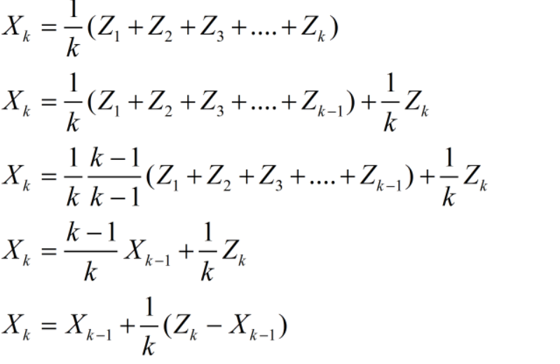
这里我们可以知道，当k越大，1/k越趋近于0
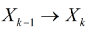
也就是说，当k足够大的时候，后续的测试结果就不那么重要了
我们继续处理这个式子变成如下：
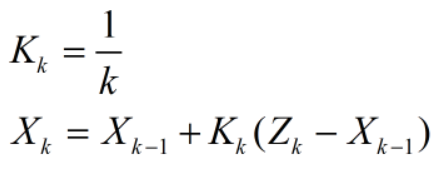
我们来这么理解：
当前的估计值 = 上一次的估计值 + 系数 * （当前测量值 - 上一次的估计值）
而这个系数K就是卡尔曼增益（因数）
从这个式子里我们可以看到，新的估计值只与上一次的估计只有关，上一次的估计值又只与上上一次的估计值有关，这是一种递归
在卡尔曼中，你不需要很久以前的数据，只需要上一次的就足够了
这里我们引入一个新的概念：
估计误差：E_est
测量误差：E_mea
E：Error
est：Estimate
mea：Measurement
而K就等于：
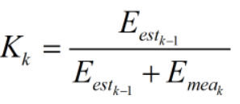
在k时刻，当E_est_k-1 >> E_mea_k 时：K→1，①式变为：
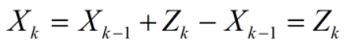
意味当k-1时的估计误差远大于第k次的测量误差，那么我们的估计值X_k就很趋近于测量值Z_k
同样，在k时刻，当E_est_k-1 << E_mea_k 时：K→0，①式变为：
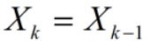
意味当我们的估计误差足够大的时候，我们选择更相信测量值
有了上面这些东西，我们就可以着手这个简单的问题了
- 计算：
- 计算：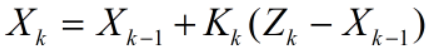
- 更新：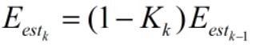
有了这三个公式，让我们来试试下面这个问题：
有一个条度为50mm的线，我们想要知道它的确切长度，但幸运的是你的测量误差尺子十分的理想，你觉得它的误差为3mm，但不幸运的是你的估计误差估计很不准，有5mm的误差，这时我们想要知道这条线到底有多长，我们需要结合两个测量
假设我们得出了以下数据：
- 第一次的估计值=40mm
- 估计误差5mm
- 第一次的测量值=51mm
- 测量误差3mm
我们可以借助三个公式用Excel表格进行计算，数据输出如下：
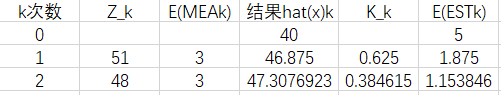
将公式输入Excel表格并求解画出图像
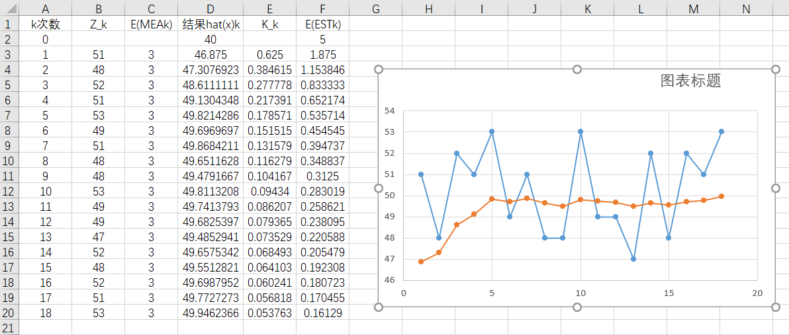
可以看到当我们进行五次迭代以后，数据已经非常接近真实值，至此，前言结束，Excal公式如下，想动手的朋友可以自己去试试：
- 计算部分从第三行开始，所以这里直接放公式
- D3=D2+E3*(B3-D2)
- E3=F2/(F2+C3)
- F3=(1-E3)*F2
2 进阶部分
通过上述栗子我们可以大致了解到Kalman Filter基本思想，但也许有人会说上面的例子里直接数据求算数平均不是更快么？
确实，在一些比较普通的系统中，Kalman Filter的作用并没有那么明显，但在一些复杂系统中，Kalman Filter能发挥出更大的优势
回归正题，我们来看下面一个栗子（数据融合）：
如果我们想要知道一个物体的真实重量，那么我们最简单的办法就是找个秤称一下，但是如果一个称不准呢，那么我们可以再找一个秤，得到两个数据以及两个秤的标准差：
- Z_1 = 30g
- Z_2 = 32g
- σ_1 = 2g
- σ_2 = 3g
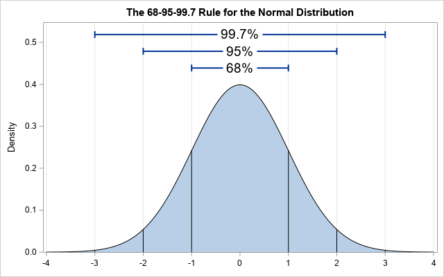
两个正态分布图会有交叉的部分，而如果我们想要知道真实的数据，那么这个真实的数据将会落在交叉的部分，并且会更靠近σ_1那部分
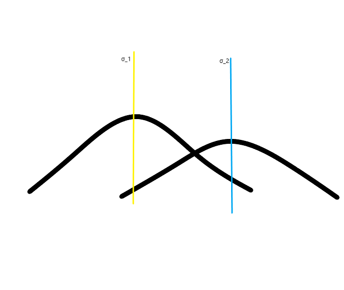
由此，我们写出一个公式估计真实值Z：
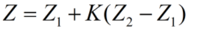
K依然是卡尔曼增益，在这里，我们需要求解K，使得方差最小
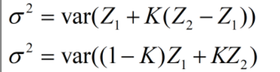
由方差的性质可以将这两个分开
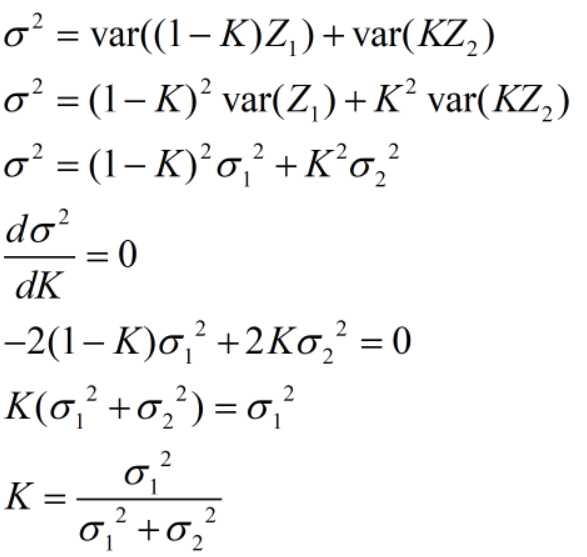
将σ_1 =2g和 σ_2=3g带入
可以得到K=0.2
带入公式：
得出最优估计值Z=30.4g
可以计算出它的σ = 1.79
再来看一个例子（协方差矩阵）方差协方差在一个矩阵中表现出来：
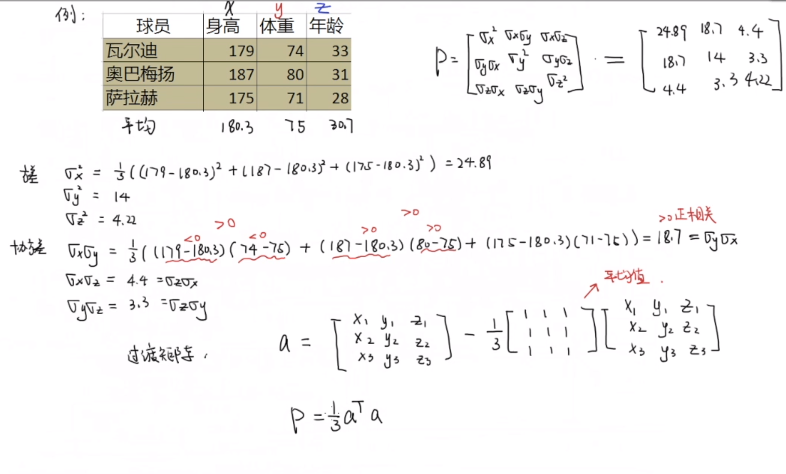
状态空间表达：
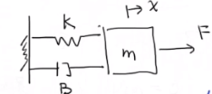
一个简单的栗子，弹簧系统的栗子，F是力，x位移，k弹性系数，B阻尼系数，m质量
得出方程：
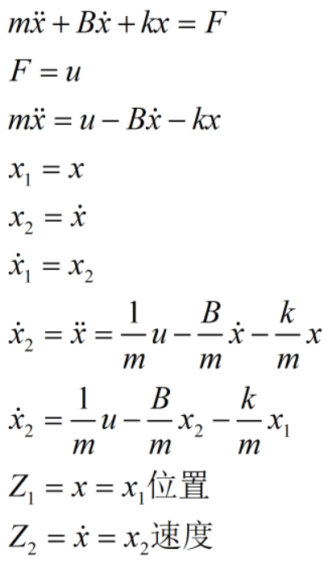
将上面的公式用矩阵来表示：
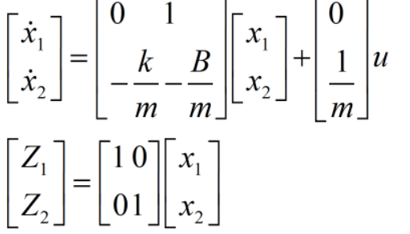
我们可以将其归纳为：
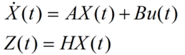
这里的是连续形式，X(t)随时间变化
而我们也可以把它写成离散形式：
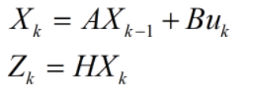
这里的下标k、k-1、k+1等都是时间单位
但现实世界中存在许多不确定性，我们现有的模型不能很好的反应实际情况，所以我们的模型需要改变一下：
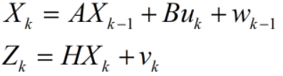
这里的w_k-1和v_k分别代表过程噪音和测量噪音
一式计算结果
二试测量结果
这就是状态空间方程
虽然过程噪声不可测量，但是我们可以用正态分布来表示
P(w)~(0,Q)0期望，Q协方差矩阵
Q=E[w,w^T]
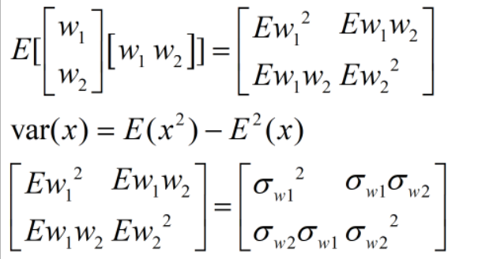
同理，P(v)~(0,R)0期望，R协方差矩阵，推理过程一样，这里就不写了
用数据融合的思想来处理一下我们的公式
先验：
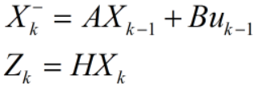
后验：
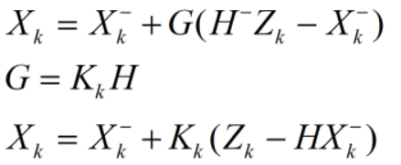
X-_k为先验估计，K与误差大小息息相关K属于[0,H-]，为了量化误差，我们引入E_k
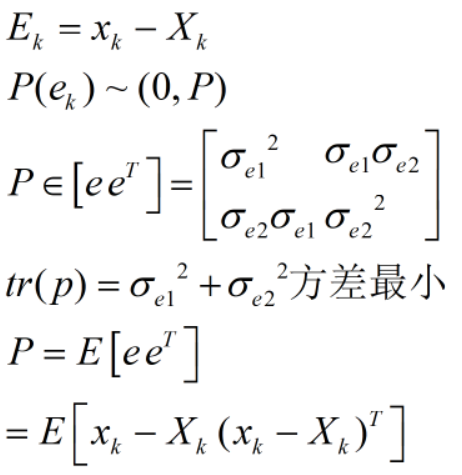
这里的x_k是真实值，X_k是估计值，化简的出：

将结果带入原式：
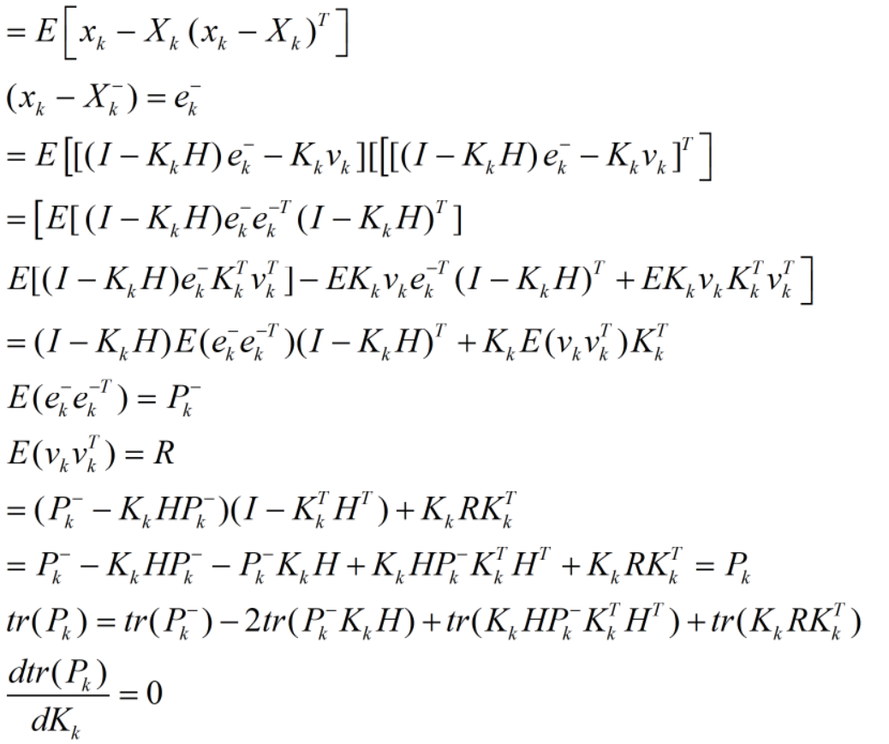
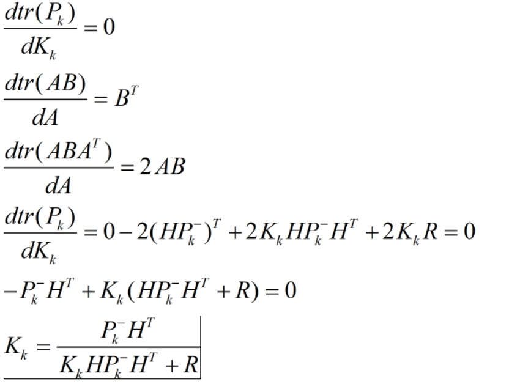
当测量结果误差小的时候，K_k=H-，当测量误差很大的时候，K_k=0，至此我们已经推导出卡尔曼增益系数K
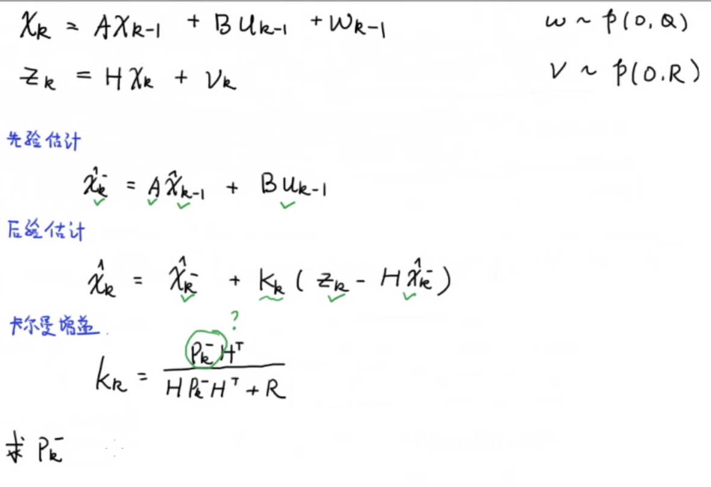
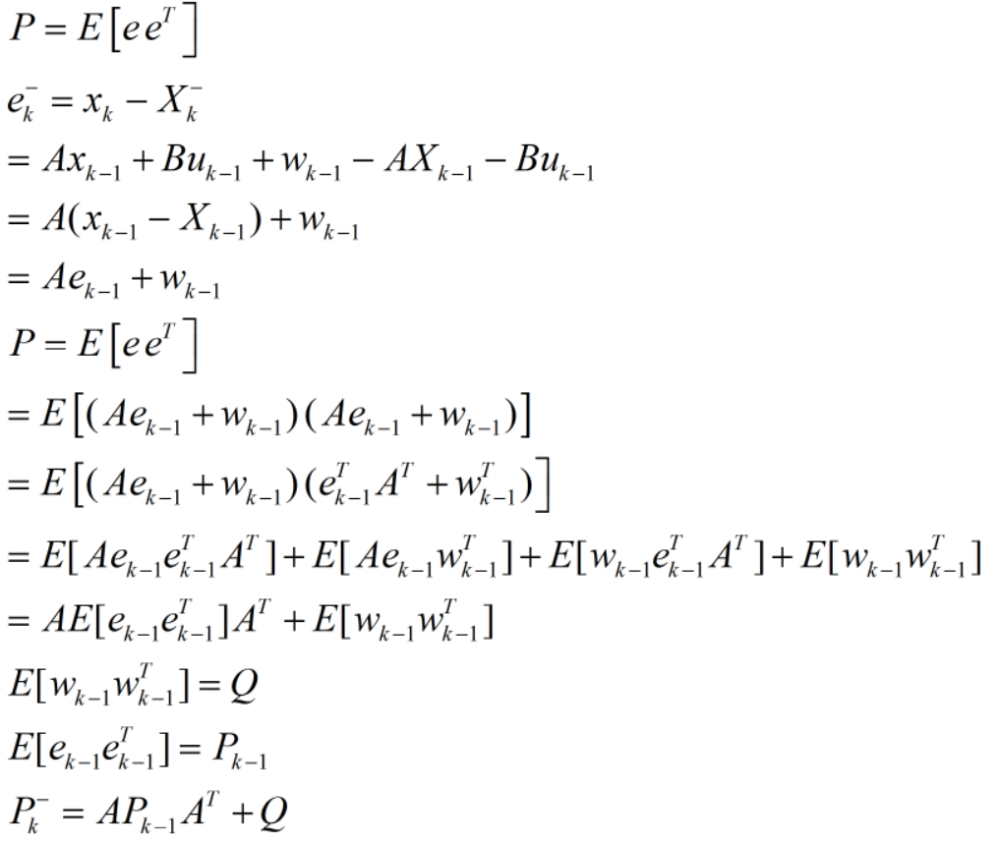
有了这个式子，我们就可利用卡尔曼滤波器来预测状态变量的值了
如此一来，我们总结一下我们所得到的式子将上面的X均带上帽子：
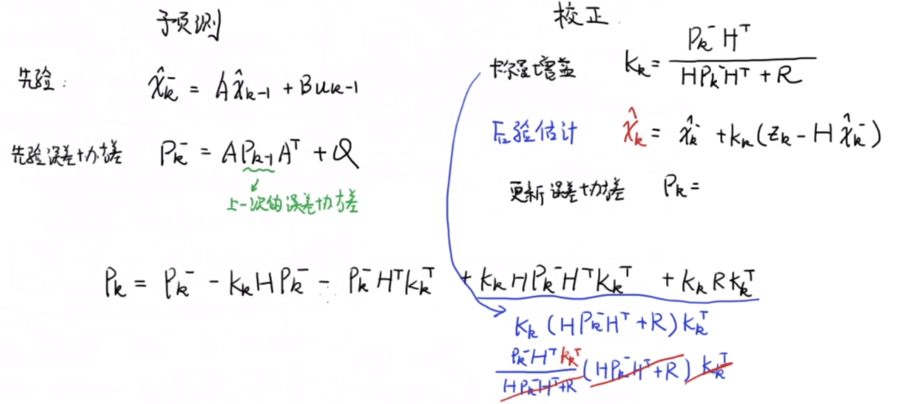
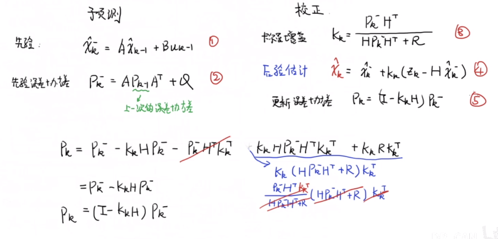
这就是卡尔曼滤波器的全部五个公式了
3 示例
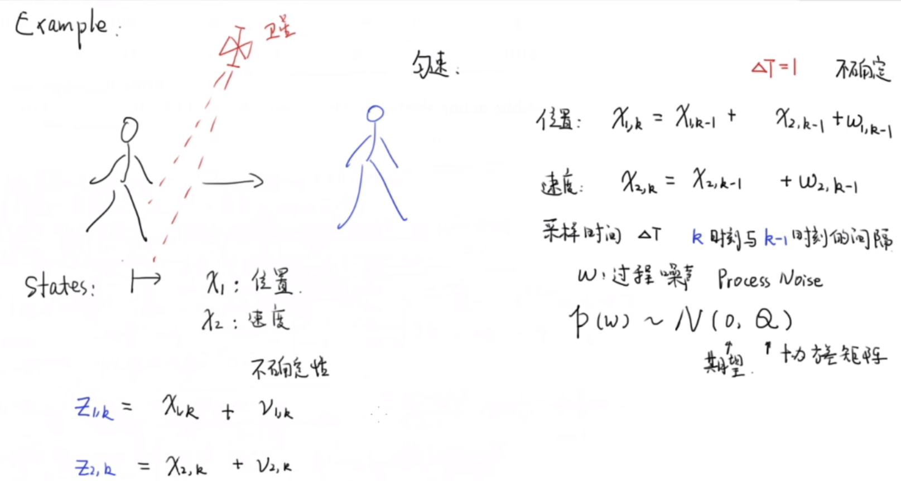
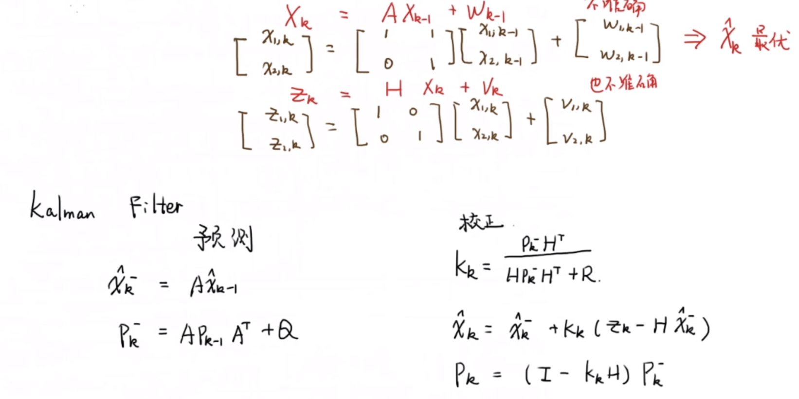
大家可以自行使用这个例子代入合适的数据去计算结果，其中除手写部分均为Math Type输入截图，总结不易希望大家喜欢。
参考：https://www.bilibili.com/video/BV1ez4y1X7eR/?spm_id_from=333.788.videocard.2